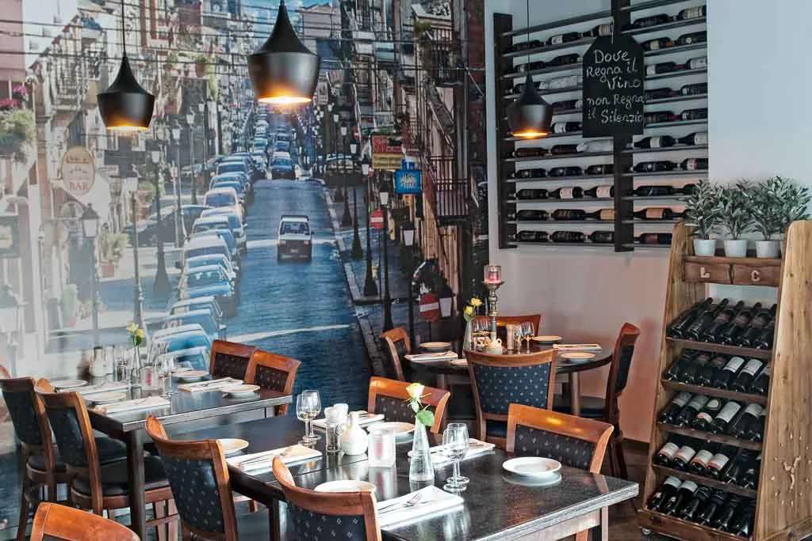
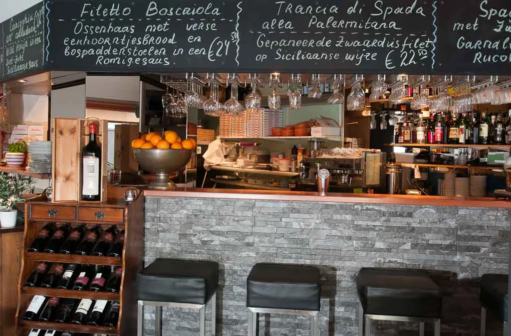
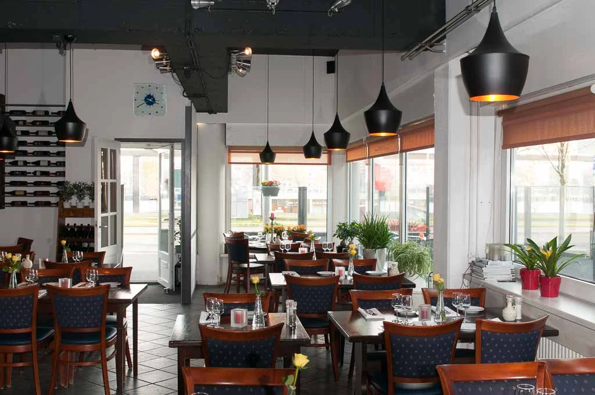

Verse mosselen
Ook dit jaar hebben wij weer verse mosselen. Uiteraard op Siciliaanse wijze bereid.
Ristorante Pizzeria · Boompjes 388, Rotterdam
sinds 1996 aan de Boompjes
Originele Italiaanse gerechten, met zo hier en daar een internationale draai. Pizza, pasta, vis en vlees in een authentieke sfeer.

De volledige kaart van Messina. Heeft u een allergie of intolerantie? Meld het voordat u bestelt, dan stellen we waar mogelijk een alternatief gerecht voor.
Ook dit jaar hebben wij weer verse mosselen. Uiteraard op Siciliaanse wijze bereid.
Een speciaal zomergerecht: conchiglie pasta met garnalen, zwaardvisfilet en spinazie in een romige saus.
est. 1996
Wij zijn met ons restaurant sinds 1996 gevestigd aan de Boompjes in Rotterdam. Het doel van ons restaurant is om de bezoekers een authentieke sfeer te presenteren. Wij serveren alleen originele Italiaanse gerechten, met zo hier en daar een internationale draai.
Uw gastheer Gianni Pulvirenti zal ervoor zorgen dat u het bezoek aan ons restaurant niet snel vergeet.
Het is uiteraard mogelijk om ons gehele restaurant af te huren en specifieke afspraken te maken over het menu. Neem vrijblijvend contact met ons op via 010 433 30 55 of info@restaurantmessina.nl.


Wij verzoeken u het formulier in te vullen voor het reserveren van een tafel. Liever bellen? Dat kan op 010 433 30 55.
010 433 30 55
info@restaurantmessina.nl
| Maandag | diner 17:00 – 22:00 |
|---|---|
| Woensdag t/m vrijdag | lunch 12:00 – 14:00 diner 17:00 – 22:00 |
| Zaterdag & zondag | diner 17:00 – 22:00 |
Parkeren: recht achter ons restaurant ligt parkeergarage De Boompjes, 24 uur per dag en 7 dagen per week open.
Thuis eten? Wij bezorgen via Thuisbezorgd.
Plan uw route